Analyzing plant disease epidemics with the R package epiphy
Christophe Gigot
2018-05-20
Source:vignettes/epiphy.Rmd
epiphy.RmdAbstract
This paper presents the R package epiphy which provides a common framework for spatialized plant disease intensity data collected at one or more time points. Many statistical methods developed over the last decades to describe and quantify plant disease epidemics are implemented. The paper is an introduction to the framework concepts and the provided tools using different sample codes to illustrate possible workflows.
Keywords: plant disease epidemics, phytopathology, spatial data, spatial aggregation, aggregation index, beta-binomial distribution, Taylor’s power law, binary power law, spatial hierarchy analysis, SADIE, R.
Introduction
Performing analyses of plant disease intensity data is a common task for many field phytopathologists. Different softwares have been developped to make computationally available some statistical methods, but there are separated programs and are sometimes restricted to a specific computer system.
This paper describes the version 0.3.4 of the package epiphy for R (R Core Team 2015), which offers an uniform and coherent framework to perform spatial analyses in plant disease epidemics. Efforts were made to ensure that the users can fluently and fluidly carry out the data analyses that meet their needs, making it possible to generalize and automate such tasks, and piece together a sequence of operations, while limiting the need for reimplementing methods described in the scientific literature to save time and reduce the potential for error. Another key advantage of this package is to allow users unfamiliar with these methods (e.g. students, other scientists) to use them with safeguards against misuses of methods specific for a given kind of data set for instance. While firstly intented to be a toolbox for phytopathologists, implemented methods may be easily translatable to other data contexts.
This package consists of three components: a bundle of historical data sets in plant disease epidemiology, a set of relevant data classes to reliably and efficiently handle date sets, and statistical methods developped over the last few decades to extract information from collected data sets. Information about these different components are given in this paper, but the main amphasis is made on the practical tools using code examples.
As the epiphy package is not yet available on CRAN, one needs to use the following lines to install it:
install.packages("devtools") # If not already installed.
devtools::install_github("chgigot/epiphy") # Note: Same command for the updates.
library(epiphy)Data sets
The package epiphy is provided with a bundle of more than 10 historical data sets that were mainly published in plant disease epidemiology literature. There is, for example, counts of arthropods made in a wheat field in UK in 1996 (Holland, Winder, and Perry 1999) or incidence of tomato spotted wilt virus (TSWV) disease recorded in field trials at the Waite Institute (Australia) in 1929 (Cochran 1936). These two data sets (called arthropods and tomato_tswv$field_1929 in epiphy) will be used throughout this paper. To take a look at all the available data sets, type data(package = "epiphy"). Each data set is supported by relevant documentation specifying briefly the context of data collection, the data structure and the published references. Note that you do not need to use the function data to load a provided data set because all of them are already lazily loaded when epiphy is loaded. This means that they will not occupy any memory until you use them.
str(arthropods)## 'data.frame': 378 obs. of 6 variables:
## $ x : int 1 2 3 4 5 6 7 1 2 3 ...
## $ y : int 1 1 1 1 1 1 1 2 2 2 ...
## $ xm: int 0 30 60 90 120 150 180 0 30 60 ...
## $ ym: int 0 0 0 0 0 0 0 30 30 30 ...
## $ t : int 1 1 1 1 1 1 1 1 1 1 ...
## $ i : int 29 32 2 24 20 10 26 21 25 12 ...str(tomato_tswv$field_1929)## 'data.frame': 4320 obs. of 5 variables:
## $ x: int 1 1 1 1 1 1 1 1 1 1 ...
## $ y: int 1 2 3 4 5 6 7 8 9 10 ...
## $ t: int 1 1 1 1 1 1 1 1 1 1 ...
## $ i: int 0 1 0 1 0 0 0 0 1 0 ...
## $ n: int 1 1 1 1 1 1 1 1 1 1 ...In these two examples, \(x\) and \(y\) correspond to the spatial coordinates of the sampling units distributed in a regular two-dimensional grid. Specifically \(x\) and \(y\) are the row id and the within-row sampling unit id, respectively. \(t\) variable stands for the assessment time or date. There are six and three recording dates for the counts of arthropods and the TSWV incidence data sets, respectively. \(i\) variable corresponds to the number of recorded individuals (arhtropods or diseased plants) in each sampling unit. \(n\), which is only there in incidence data sets, is the total number of individuals in a sampling unit. As in the raw TSWV incidence data set, \(n = 1\) everywhere, this means that each sampling unit contains only one plant and so \(i\) can only be equal to 0 (the plant is healthy) or 1 (the plant is diseased).
Conceptual framework
In order to collect spatial plant disease data, an appropriate sampling unit (or quadrat or sample unit or cluster) corresponding to a location where assessments are carried out must be chosen. It may be a plant unit (typically a leaf in the case of foliar pathogens), an indivudal plant or a cluster of nearby plants. The different ways of recording disease levels (or disease intensity) were sometimes confusing in the literature. We strive to stick to the nomenclature proposed by McRoberts, Hughes, and Madden (2003) where the count of visible symptoms (such as lesions), the presence or absence of disease, and the assessment of the proportion of plant tissue diseased correspond to count, incidence and severity data, respectively. To reliably handle such kinds of observational data sets, the package epiphy relies on the definition of a set of relevant classes. There is a mother class, named intensity, which makes it possible to format disease data sets for further analyses and check that everything is fine with the provided data (e.g. the input data must be a data frame). Object creation is only possible for one of the three subclasses of intensity which are count, incidence and severity for eponymous kinds of data. (Note that there is no implemented methods for the severity class at the moment.) Count data are integers starting from zero with no upper limit, while incidence data differ only by a upper limit set equal to the number of individuals in the sampling unit. Severity data correspond to percentages ranging from 0 to 100%.
When creating an object of one of the subclasses of intensity, it is necessary to perform variable mapping to describe how variables in the input data frame will be mapped to spatial, temporal and observational properties of the analysis methods described in a later section. The reserved variable names for spatial information correspond to the three spatial dimensions, x, y and z. (Note that no currently implemented method deals with the third dimension z). t is used to map temporal information. Finally, i and n are reserved for the so-called observational properties. They stand for recorded intensity and number of individuals in a sampling unit, respectively. Variable mapping can be implicit, if (some of) the reserved names are already present in the column names of the input data frame, or explicit, if the user make the links between the reserved names and the column names using the function mapping. Note that this paradigm is similar to the one used in ggplot2 package with the function aes.
# Count data
# We will use only the last assessment date for the arthropods data set:
arthropods_t6 <- arthropods[arthropods$t == 3, ]
# - Explicit mapping:
(cou_t3 <- count(arthropods_t6, mapping(x = x, y = y, t = t, i = i)))## # A mapped object: count class
## # dim: 2 space, 1 time, 1 obs
## [x] [y] . . [t] [i]
## x y xm ym t i
## 1 1 1 0 0 3 3
## 2 2 1 30 0 3 26
## 3 3 1 60 0 3 10
## 4 4 1 90 0 3 8
## 5 5 1 120 0 3 16
## 6 6 1 150 0 3 12
## # ... with 57 more records (rows)# - Total implicit mapping:
cou_t3_bis <- count(arthropods_t6)
# - Partial implicit mapping:
cou_t3_ter <- count(arthropods_t6, mapping(i = i))
all(identical(cou_t3, cou_t3_bis), identical(cou_t3, cou_t3_ter))## [1] TRUE# Implicit mapping for incidence data:
(inc <- incidence(tomato_tswv$field_1929))## # A mapped object: incidence class
## # dim: 2 space, 1 time, 2 obs
## [x] [y] [t] [i] [n]
## x y t i n
## 1 1 1 1 0 1
## 2 1 2 1 1 1
## 3 1 3 1 0 1
## 4 1 4 1 1 1
## 5 1 5 1 0 1
## 6 1 6 1 0 1
## # ... with 4314 more records (rows)Some useful information are displayed when you print an intensity object, such as the exact nature of this object (count, incidence or severity). Mapping variables (with squared brackets) and mapped variables (just below mapping variables) are also printed. You can also plot such objects to vizualize all the data in a convenient way.
plot(cou_t3, tile = FALSE, size = 5)
Figure 1. Observation sequences of maps of of the counts of arthropods over time.
It is possible to perform useful data transformation directly with intensity objects. For example, the clump function can be used to regroup adjacent sampling units into bigger ones, and thus redefine what is a sampling unit in a given data set. An extended version of split was also implemented to deal with intensity objects in an efficient way. In addition, you can use as.data.frame anytime you want to retrieve the underlying data frame of an intensity object (without any mapping).
inc9 <- clump(inc, unit_size = c(x = 3, y = 3))
plot(inc)
plot(inc9)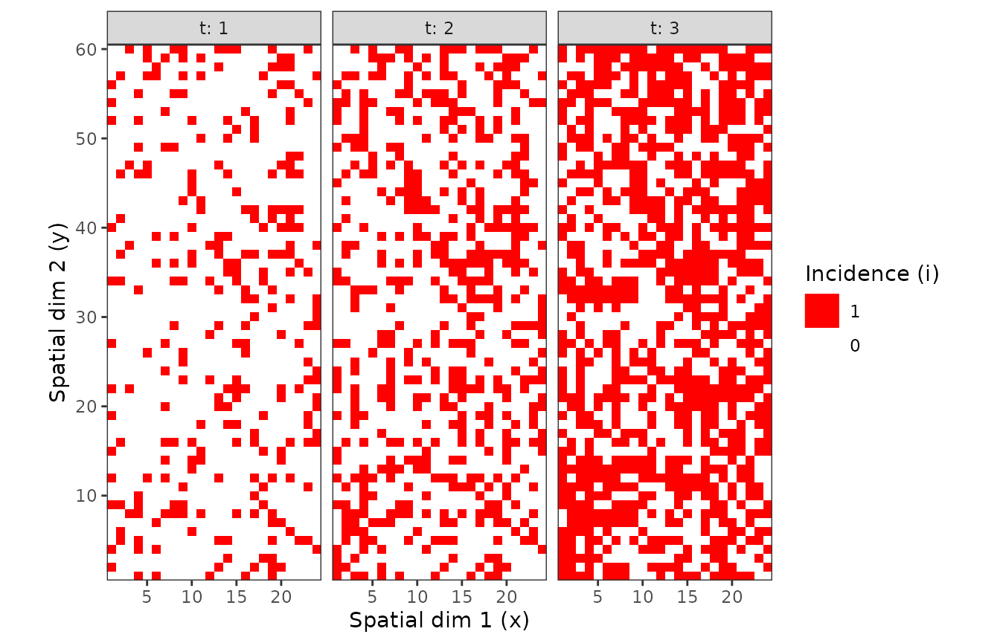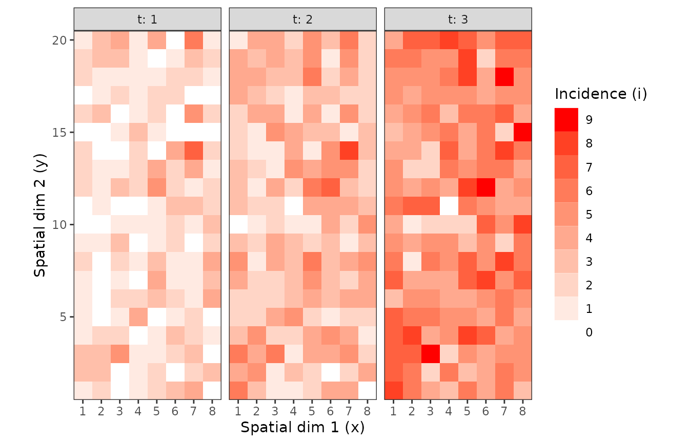
Figure 2. Observation sequences of maps of TSWV incidence data over time for two definition of a sampling unit. A sampling unit contains either only one tomato plant (above), or a set of 9 plants (below). In each case, the three maps correspond to the same field at different dates.
inc9_t1 <- split(inc9, by = "t")[[1]]
inc9_t1_sub <- split(inc9_t1, unit_size = c(x = 4, y = 5))[[6]]
plot(inc9_t1)
plot(inc9_t1_sub) 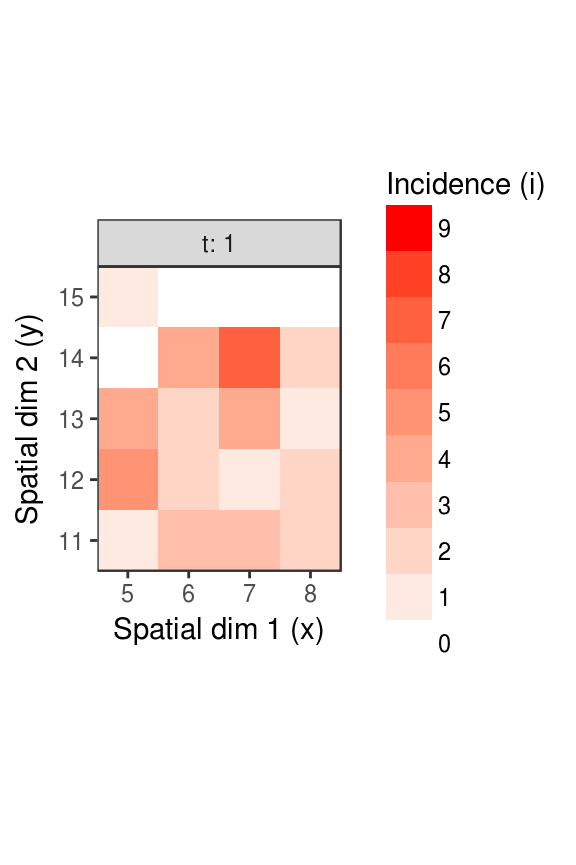
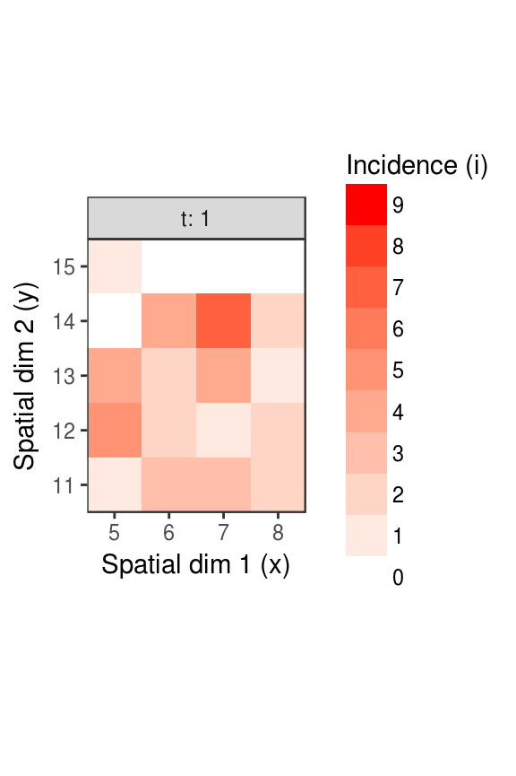
Figure 3. Different sub-parts of the TSWV incidence data set, with only what was observed for the first scoring time (left) and for a subpart of this same scoring time (right).
Statistical methods
A collection of statistical methods has been implemented in epiphy. At the moment, the available tools include several indices of aggregation (e.g. Fisher’s, Lloyd’s and Morisita’s indices), distribution fitting to reveal any spatial aggregation in data sets, power law analysis (Taylor’s and binary forms) and an early version of Spatial Analysis by Distance IndicEs (SADIE). We strived to mention most relevant scientific literature related to each method in the corresponding R help pages.
Most of the time, a function dedicated to some methods is clever enough to know which “flavor” of the method needs to be used with the provided data set. For example, if you use the function power_law with a count data set, the regular Taylor’s power law will be called, whereas in the case of incidence data, it will be the binary form of the power law. That is the other reason why, in addition to performing initial compliance tests, a set of dedicated classes was implemented to handle different kinds of intensity data sets. In any case, the function outputs will let you know what flavor was used to perform the analysis.
Aggregation indices
The index of aggregation for incidence data is calculated by default when the agg_index function is used with such a data set.
(inc9_t1_idx <- agg_index(inc9_t1))## Fisher's index of dispersion:
## (Version for incidence data)
## 1.4If this function is called with count data, the corresponding version of this index (also called Fisher’s index of aggregation) is calculated. Other indices may be calculated with agg_index, such as Lloyd’s index of patchiness and Morisita’s coefficient of dispersion. The index calculated by default can be tested using a chi-squared test, a z-test or a c(\(\alpha\)) test.
chisq.test(inc9_t1_idx)##
## Chi-squared test for (N - 1)*index following a chi-squared
## distribution (df = N - 1)
##
## data: inc9_t1_idx
## X-squared = 222.56, df = 159, p-value = 0.0006578z.test(inc9_t1_idx)##
## One-sample z-test
##
## data: inc9_t1_idx
## z = 3.7803, p-value = 0.0001566
## alternative hypothesis: two.sidedcalpha.test(inc9_t1_idx)##
## C(alpha) test
##
## data: inc9_t1_idx
## z = 3.7092, p-value = 0.0002079In this example, the null hypothesis of non-aggregation is rejected.
Distribution fitting
As its name implies, the function fit_two_distr try to fit two different distributions to a given data set. One distribution is supposed to be representative of a random pattern, while the second one should denote an aggregated pattern. For count data, the default distributions are Poisson and negative binomial for random and aggregated patterns, respectively. For incidence data, the default distributions are binomial and beta-binomial for random and aggregated patterns, respectively (Hughes and Madden 1993; Madden and Hughes 1995). In the latter case, fit_two_distr may be viewed as an alternative to the BBD software (Madden and Hughes 1994). Note that epiphy provides also a set of handy functions to work with the beta-binomial distribution (dbetabinom, pbetabinom, qbetabinom and rbetabinom).
cou_t3_distr <- fit_two_distr(cou_t3)
summary(cou_t3_distr)## Fitting of two distributions by maximum likelihood
## for 'count' data.
## Parameter estimates:
##
## (1) Poisson (random):
## Estimate Std.Err Z value Pr(>z)
## lambda 11.68254 0.43062 27.129 < 2.2e-16 ***
## ---
## Signif. codes: 0 '***' 0.001 '**' 0.01 '*' 0.05 '.' 0.1 ' ' 1
##
## (2) Negative binomial (aggregated):
## Estimate Std.Err Z value Pr(>z)
## k 3.308038 0.742318 4.4564 8.336e-06 ***
## mu 11.682540 0.916690 12.7443 < 2.2e-16 ***
## prob 0.220675 0.040883 5.3977 6.748e-08 ***
## ---
## Signif. codes: 0 '***' 0.001 '**' 0.01 '*' 0.05 '.' 0.1 ' ' 1inc9_t1_distr <- fit_two_distr(inc9_t1)
summary(inc9_t1_distr)## Fitting of two distributions by maximum likelihood
## for 'incidence' data.
## Parameter estimates:
##
## (1) Binomial (random):
## Estimate Std.Err Z value Pr(>z)
## prob 0.181250 0.010151 17.855 < 2.2e-16 ***
## ---
## Signif. codes: 0 '***' 0.001 '**' 0.01 '*' 0.05 '.' 0.1 ' ' 1
##
## (2) Beta-binomial (aggregated):
## Estimate Std.Err Z value Pr(>z)
## alpha 3.671093 1.457761 2.5183 0.011792 *
## beta 16.574710 6.665468 2.4867 0.012895 *
## prob 0.181326 0.011913 15.2204 < 2.2e-16 ***
## rho 0.047068 0.017943 2.6232 0.008711 **
## theta 0.049393 0.019759 2.4997 0.012428 *
## ---
## Signif. codes: 0 '***' 0.001 '**' 0.01 '*' 0.05 '.' 0.1 ' ' 1plot(cou_t3_distr, breaks = 17)
plot(inc9_t1_distr)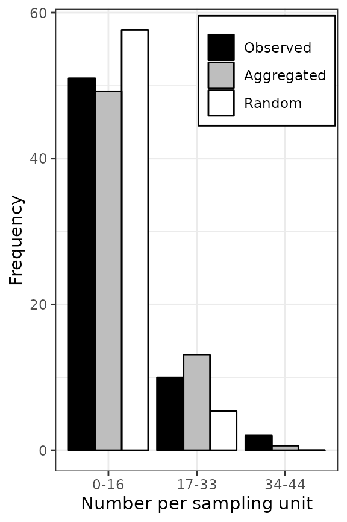
Figure 4. Frequency distributions of the count of arthropods in a wheat field in UK on 12 July 1996 (left), and the incidence of TSWV disease in a tomato field in Australia on 18 December 1930 (right). The assessments of arthropods counts and TSWV incidence were reported by Perry et al. (1999) and Cochran (1936), respectively. The black bars represent observed frequencies, the grey bars represent expected aggregated frequencies (negative binomial on the left and beta-binomial on the right), and the white bars represent expected random frequencies (Poisson on the left and binomial on the right).
Power law
Taylor’s power law can be used to assess the overall degree of heterogeneity in a collection of count data sets at the sampling-unit scale (Taylor 1961). A binary form of this power law was proposed to deal with incidence data (Hughes and Madden 1992). Taylor’s and binary power laws describe the relationship between the observed variance of diseased individuals (or individuals of interest) within a data set and the corresponding variance under the assumption that the data have a random distribution distribution (i.e., Poisson and binomial for count and incidence data, respectively).
For the sake of illustration, the count of arthropods will be splitted into data sets of 9 sampling units each (3 rows \(\times\) 3 sampling units \(\times\) 1 recording date) before performing Taylor’s power law analysis on this data set. To also give an example use of the binary form of the power law, we will split the TSWV incidence data into data sets of 20 sampling units each (4 rows \(\times\) 5 sampling units of 9 plants each \(\times\) 1 recording date) in order to also simulate a collection of different data sets.
cou <- count(arthropods[arthropods$x <= 6, ])
cou <- split(cou, unit_size = c(x = 3, y = 3))
cou_plaw <- power_law(cou)
coef(summary(cou_plaw))## Estimate Std. Error t value Pr(>|t|)
## (Intercept): log_base(Ar) -0.1191721 0.5650426 -0.2109082 8.342179e-01
## log(x): b 1.5752164 0.2010455 7.8351249 4.035639e-09inc9_spl <- split(inc9, unit_size = c(x = 4, y = 5))
inc_plaw <- power_law(inc9_spl)
coef(summary(inc_plaw))## Estimate Std. Error t value Pr(>|t|)
## (Intercept): log_base(Ar) 0.5533101 1.04346689 0.5302613 6.012425e-01
## log(x): b 1.0994981 0.27222117 4.0389883 5.484494e-04
## Ai 1.7389998 1.81458867 0.9583438 3.483037e-01
## ai 0.1552786 0.06965083 2.2293866 3.631573e-02
## AI 1.1230753 0.19158067 5.8621535 6.727429e-06
## aI 12.5775689 5.64171735 2.2293866 3.631573e-02plot(cou_plaw)
plot(inc_plaw) 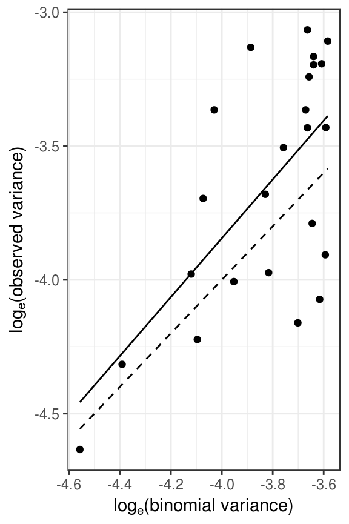
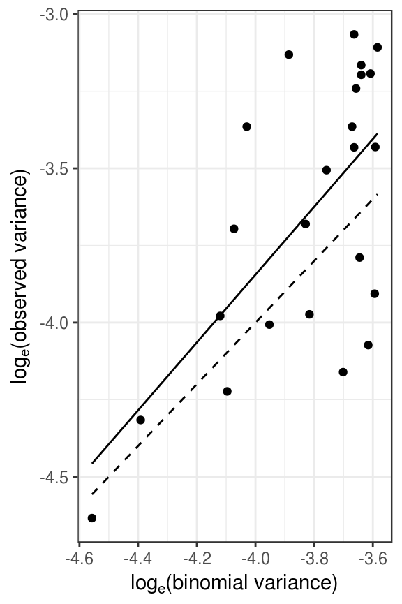
Figure 5. Relationship between the logarithm of the observed variance and the logarithm of the theoretical variance for counts of arthropods carryied out in UK (left) and incidence data of TSWV disease collected in Australia (right). Solid lines indicate the linear relationship (on logarithmic axes) between observed and theoretical random variances. Dashed lines indicate the cases where both variances are equal (which suggests an absence of aggregation).
Spatial hierarchy
To carry out spatial hierarchy analyses (Hughes et al. 1997), it is necessary to prepare the existing data sets. To do so, the threshold function is of primary interest. As in graphics editors, it allows to “simplify” the image in the sense that every value below and above a given threshold is given the value 0 and 1, respectively. By default, everything above 0 is given 1, and 0 stays at 0. threshold is thus useful to report a whole sampling unit as “healthy” (0), if no diseased individual at all was found within the sampling unit, or “diseased” (1) if at least one diseased individual was found.
plot(inc9_t1)
plot(threshold(inc9_t1))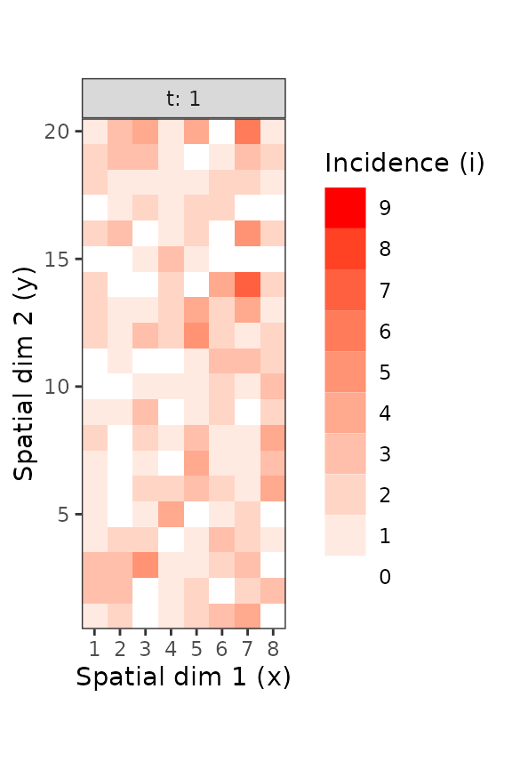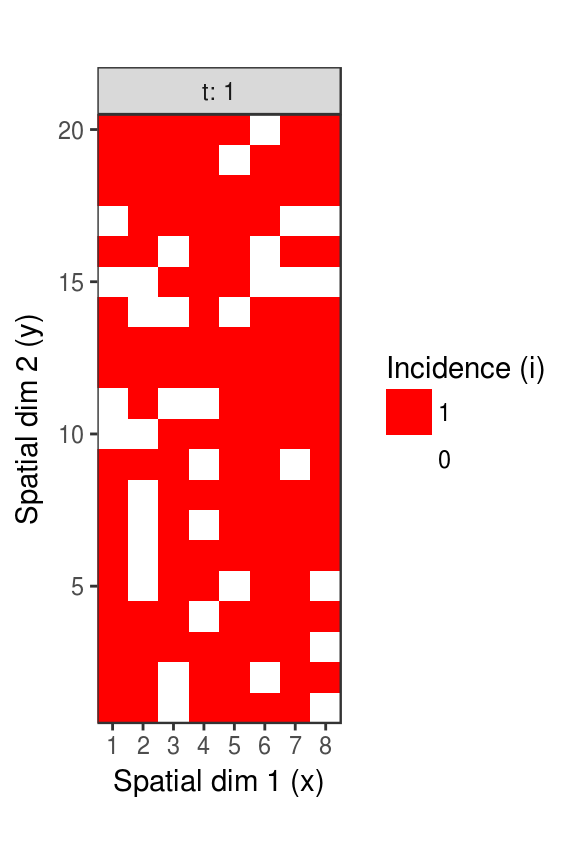
Figure 6. Disease incidence of TSWV for sampling units consisting in 9 tomato plants, at the plant level (left) and the sampling unit level (right). These figures were made using the intensively mapped TSWV incidence data reported by Cochran (1936) for the first assessment performed on 18 December 1929.
For the sake of illustration, the TSWV incidence data reported by Cochran (1936) will be first splitted into data sets of 20 sampling units each (4 rows \(\times\) 5 sampling units of 9 plants each \(\times\) 1 recording date) to simulate a collection of different incidence data sets. Then, disease incidence at the sampling unit level will be calculated, before performing a spatial hierarchy analysis.
inc_low <- split(inc9, unit_size = c(x = 4, y = 5, t = 1))
inc_high <- lapply(inc_low, threshold)
(inc_sphier <- spatial_hier(inc_low, inc_high))## Spatial hierarchy analysis for 'incidence' data.
##
## Parameter estimate:
## Estimate Std. Error
## log_nu 2.052793 0.08445315
## nu 7.789630 0.65785878plot(inc_sphier)
Figure 7. Relationship between the incidences of TSWV disease at the tomato plant and sampling unit level (made of 9 plants) in a two level spatial hierarchy where the sampling unit is the highest level and the plant is the lowest level. Dashed curve is the binomial fit to the data and the solid curve is the beta-binomial fit to the data. This graph is based on 24 data sets of the incidence of TSWV disease collected in 1929 in field trials in Australia.
Spatial Analysis by Distance IndicEs (SADIE)
This two-dimensional geostatistical approach uses the relative locations of the sampling units and the number of diseased individuals per sampling unit to quantify the spatial arrangement of diseased individuals by calculating the distance to regularity (Perry 1995). Regularity is defined as the state where each sampling unit of a given data set contains the same number of diseased individuals (i.e., the mean number of diseased individuals for this data set). The SADIE procedure uses a transportation algorithm to calculate the distance to regularity, and performs a randomization test to determine if an observed distance to regularity is particularly small or large. epiphy implements an early version of a cross-plateform SADIE procedure.
To perform a SADIE analysis, the spatial coordinates must reflect the real relative distances between the different sampling units. If you mapped \(x\) and \(y\) variables to grid coordinates, you can use the remap function to map them to metric coordinates (if any in your data set).
set.seed(123)
cou_t3_m <- remap(cou_t3, mapping(x = xm, y = ym))
plot(cou_t3_m)
res <- sadie(cou_t3_m)## Computation of Perry's indices:summary(res)##
## Call:
## sadie.count(data = cou_t3_m)
##
## First 6 rows of clustering indices:
## x y i cost_flows idx_P idx_LMX prob
## 1 0 0 3 -30.00000 -0.5118039 NA NA
## 2 30 0 26 40.23662 0.7578342 NA NA
## 3 60 0 10 -53.08882 -1.2300142 NA NA
## 4 90 0 8 0.00000 0.0000000 NA NA
## 5 120 0 16 30.00000 0.7802417 NA NA
## 6 150 0 12 30.00000 0.8337315 NA NA
##
## Summary indices:
## overall inflow outflow
## Perry's index 1.18768 -1.380732 1.072266
## Li-Madden-Xu's index NA NA NA
##
## Main outputs:
## Ia: 1.1484 (Pa = 0.14)
##
## 'Total cost': 1274.105
## Number of permutations: 100plot(res)
plot(res, isoclines = TRUE) 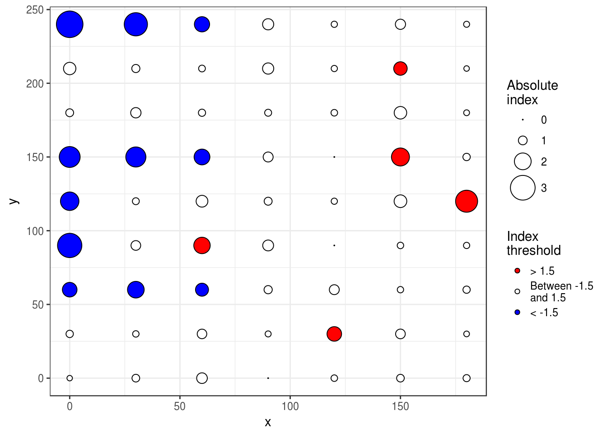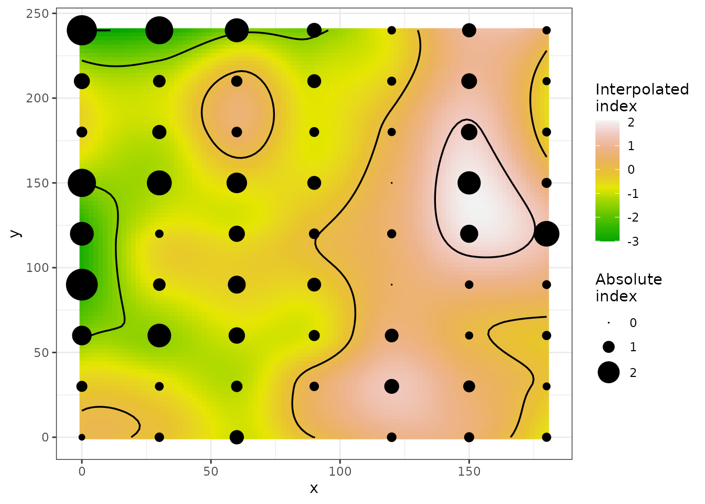
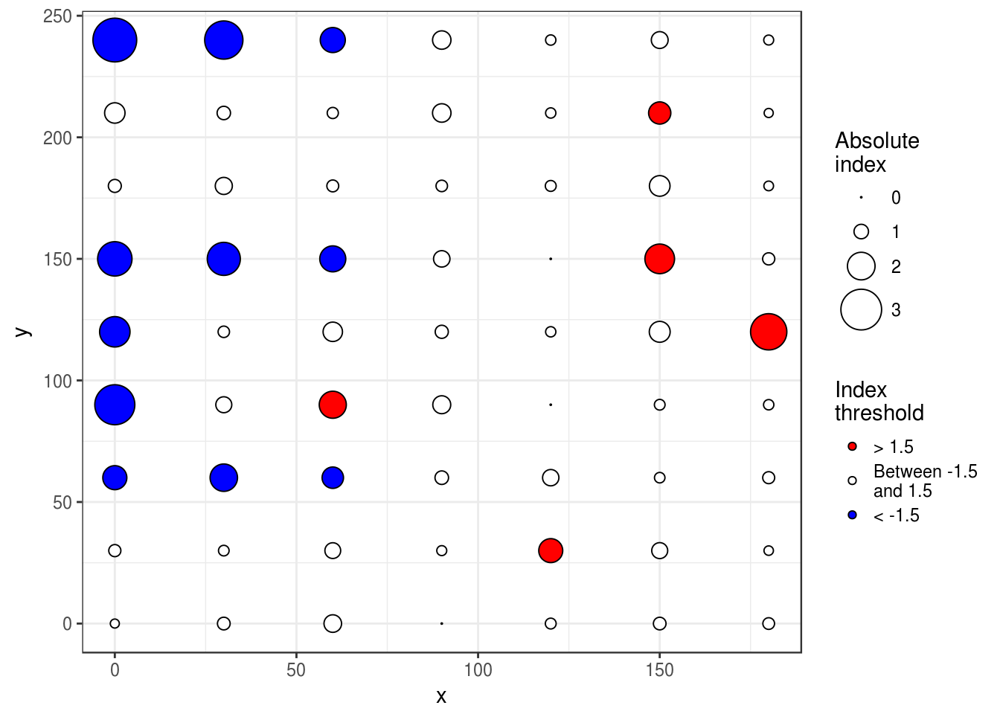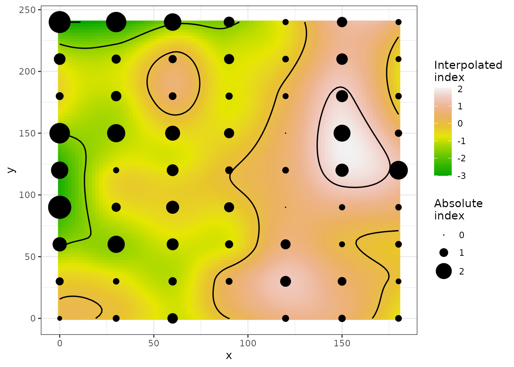
Figure 8. Maps of clustering indices with index symbols alone (top) or with interpolated landscape and contours (bottom). For the top map, symbols filled with blue (receivers) and red (donors) color indicate that absolute values of Perry’s indices are > 1.5.
Map comparison (MAPCOMP)
The MAPCOMP procedure proposed by Lavigne et al. (2010) relies on the calculation of the Hellinger distance between the density map of recorded intensity data and the density map of sampling effort.
set.seed(123)
res <- mapcomp(cou_t3_m, delta = 4, bandwidth = 60)
res## Map Comparison analysis (mapcomp)
##
## Call:
## mapcomp.count(data = cou_t3_m, delta = 4, bandwidth = 60)
##
## Stat: 0.0989 (P = 0.019802)plot(res)
Figure 9. Density map.
Conclusion
The package epiphy implements currently many of the methods described in the chapter 9 of the book “The study of plant disease epidemics” (Madden, Hughes, and Bosch 2007). We hope that such statistical methods packaged in a consistent way to be easily used in an open statistical environment will facilitate their use and spread in the phytopathology community, and even beyond.
Acknowledgments
The authors are grateful to Prof. Xiangming Xu for discussion and advice regarding the SADIE procedure.
Annexes
Most of the functions in the package epiphy have been designed to be compatible with pipeline coding. Using the package magrittr, you can pipe the analyses as in the following examples.
library(epiphy)
library(magrittr)
incidence(tomato_tswv$field_1929) %>%
split(by = "t") %>%
getElement(1) %>% # To keep the first assessment time.
clump(unit_size = c(x = 3, y = 3)) %>%
fit_two_distr() %T>%
plot() %>%
summary()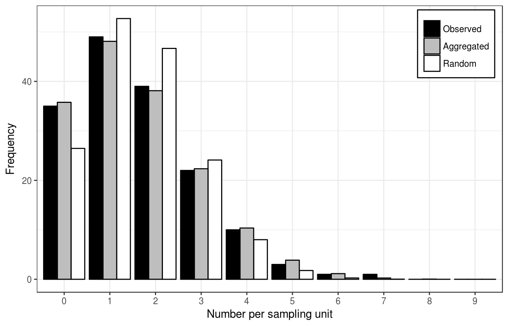
## Fitting of two distributions by maximum likelihood
## for 'incidence' data.
## Parameter estimates:
##
## (1) Binomial (random):
## Estimate Std.Err Z value Pr(>z)
## prob 0.181250 0.010151 17.855 < 2.2e-16 ***
## ---
## Signif. codes: 0 '***' 0.001 '**' 0.01 '*' 0.05 '.' 0.1 ' ' 1
##
## (2) Beta-binomial (aggregated):
## Estimate Std.Err Z value Pr(>z)
## alpha 3.671093 1.457761 2.5183 0.011792 *
## beta 16.574710 6.665468 2.4867 0.012895 *
## prob 0.181326 0.011913 15.2204 < 2.2e-16 ***
## rho 0.047068 0.017943 2.6232 0.008711 **
## theta 0.049393 0.019759 2.4997 0.012428 *
## ---
## Signif. codes: 0 '***' 0.001 '**' 0.01 '*' 0.05 '.' 0.1 ' ' 1For information, below are the same analyses without pipes.
my_data <- incidence(tomato_tswv$field_1929)
my_data <- split(my_data, by = "t")
my_data <- my_data[[1]]
my_data <- clump(my_data, unit_size = c(x = 3, y = 3))
my_res <- fit_two_distr(my_data)
plot(my_res)
summary(my_res)Here is another example:
count(arthropods) %>%
clump(unit_size = c(x = 3, y = 3)) %>%
split(by = "t") %>%
lapply(agg_index) %T>%
(function(x) plot(sapply(x, function(xx) xx$index), type = "b",
xlab = "Observation sequence",
ylab = "Aggregation index")) %>%
sapply(function(x) chisq.test(x)$p.value)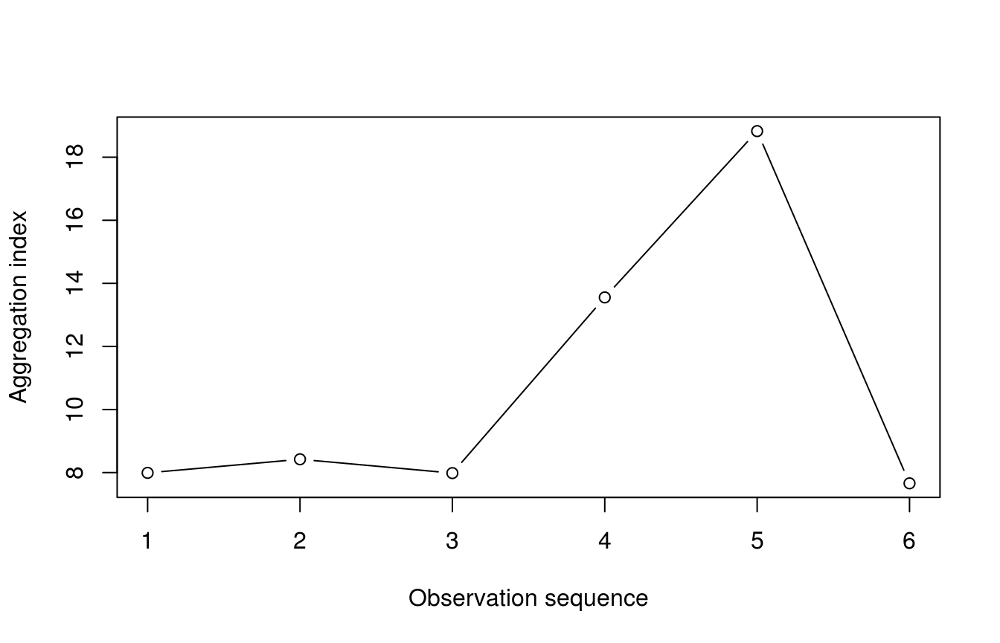
## 1 2 3 4 5
## 1.523216e-07 5.594987e-08 1.549744e-07 2.979618e-13 9.080714e-19
## 6
## 3.287662e-07References
Cochran, W. G. 1936. The statistical analysis of field counts of diseased plants. Supplement to the Journal of the Royal Statistical Society 3:49–67.
Holland, J. M., Winder, L., and Perry, J. N. 1999. Arthropod prey of farmland birds: Their spatial distribution within a sprayed field with and without buffer zones. Aspects of Applied Biology 54:53–60.
Hughes, G., and Madden, L. V. 1992. Aggregation and incidence of disease. Plant Pathology 41:657–660.
Hughes, G., and Madden, L. V. 1993. Using the beta-binomial distribution to describe aggegated patterns of disease incidence. Phytopathology 83:759–763.
Hughes, G., McRoberts, N., Madden, L. V., and Gottwald, T. R. 1997. Relationships between disease incidence at two levels in a spatial hierarchy. Phytopathology 87:542–550.
Lavigne, C., Ricci, B., Franck, P., and Senoussi, R. 2010. Spatial analyses of ecological count data: A density map comparison approach. Basic and Applied Ecology 11:734–742.
Madden, L. V., and Hughes, G. 1994. BBD — computer software for fitting the beta-binomial distribution to disease incidence data. Plant Disease 78:536–540.
Madden, L. V., and Hughes, G. 1995. Plant disease incidence: Distributions, heterogeneity, and temporal analysis. Annual Review of Phytopathology 33:529–564.
Madden, L. V., Hughes, G., and Bosch, F. van den. 2007. The study of plant disease epidemics. American Phytopathological Society St Paul, MN.
McRoberts, N., Hughes, G., and Madden, L. V. 2003. The theoretical basis and practical application of relationships between different disease intensity measurements in plants. Annals of Applied Biology 142:191–211.
Perry, J. N. 1995. Spatial analysis by distance indices. Journal of Animal Ecology 64:303–314.
Perry, J. N., Winder, L., Holland, J. M., and Alston, R. D. 1999. Red–blue plots for detecting clusters in count data. Ecology Letters 2:106–113.
R Core Team. 2015. R: A language and environment for statistical computing. Vienna, Austria: R Foundation for Statistical Computing. Available at: https://www.R-project.org/.
Taylor, L. R. 1961. Aggregation, variance and the mean. Nature 189:732–735.